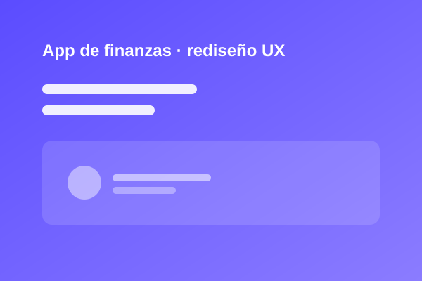
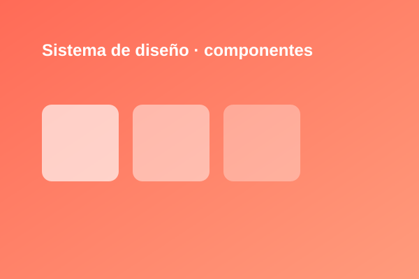
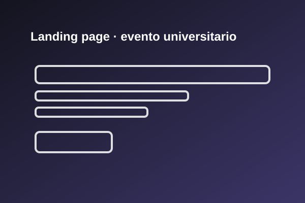
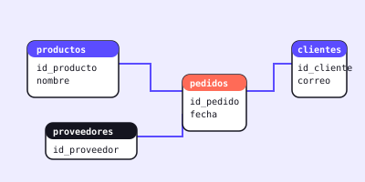
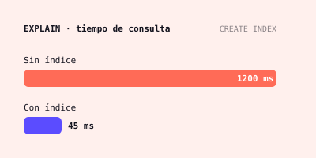
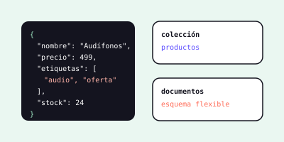

En progreso
App de finanzas · rediseño UX
Simplificar el flujo de registro de gastos de una app ficticia, de wireframes a prototipo navegable.
Figma
UX Research
Estudiante enfocado en diseño de interfaces (UI/UX) y en bases de datos: modelado, consultas SQL, NoSQL y optimización del rendimiento.
Me interesa el diseño de interfaces porque está a medio camino entre la estética y la lógica.
También me apasionan las bases de datos: me gusta diseñar modelos entidad-relación bien normalizados, escribir consultas SQL claras y encontrar la forma de que respondan más rápido con índices y una buena estructura. Creo que una interfaz solo se siente fluida cuando los datos detrás de ella están bien organizados, por eso busco unir ambos mundos.
Enfoque
Diseño centrado en el usuario y bases de datos bien estructuradas
Ahora mismo
Aprendiendo Figma, SQL avanzado, NoSQL y optimización
Meta
Armar casos de estudio reales: del modelo de datos a la interfaz
Algunas ya las domino, otras las estoy aprendiendo activamente ahora mismo, tanto en diseño como en bases de datos.
Proyectos propios que estoy desarrollando o planeando como práctica de diseño y de bases de datos.

Simplificar el flujo de registro de gastos de una app ficticia, de wireframes a prototipo navegable.

Librería de componentes (botones, inputs, tarjetas) documentada para una tienda en línea ficticia.

De wireframe a página funcional, implementada con HTML y Tailwind CSS.

Diseño de un esquema normalizado (hasta 3FN) para una tienda ficticia: productos, proveedores, pedidos y existencias, con sus consultas SQL.

Tomar una base con miles de registros, medir consultas lentas con EXPLAIN y mejorar su tiempo con índices y reescritura de consultas.

Modelar un catálogo con documentos flexibles en MongoDB y compararlo con su versión relacional para entender cuándo conviene cada uno.
Escríbeme si buscas a alguien para una práctica, colaboración o para intercambiar ideas de diseño de interfaces y bases de datos.